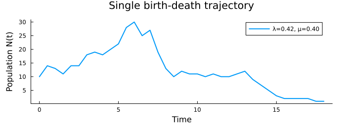
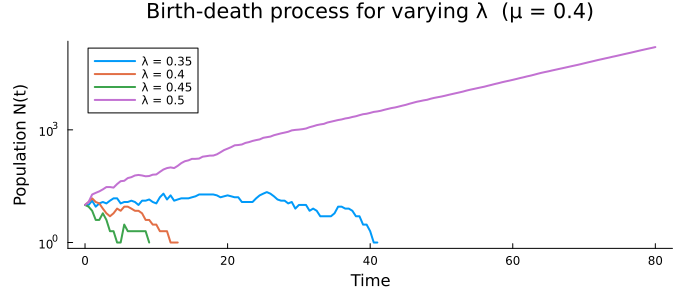

Birth-Death Process with Gillespie Algorithm
The linear birth-death process is one of the simplest continuous-time stochastic models in population dynamics. Each individual reproduces at rate $\lambda$ and dies at rate $\mu$, giving total propensities
\[r_\text{birth} = \lambda N, \qquad r_\text{death} = \mu N\]
When $\lambda > \mu$ the population grows on average; when $\lambda < \mu$ it declines toward extinction; at $\lambda = \mu$ it performs a critical random walk and will eventually go extinct.
using Random, StatsBase, Plots
using MonteCarloXSystem definition
mutable struct BirthDeathProcess <: AbstractSystem
N :: Int
λ :: Float64
μ :: Float64
rates :: Vector{Float64}
function BirthDeathProcess(N0, λ, μ)
new(N0, λ, μ, [λ*N0, μ*N0])
end
end
MonteCarloX.event_source(sys::BirthDeathProcess) = sys.rates
function MonteCarloX.modify!(sys::BirthDeathProcess, event::Int, t)
event == 1 ? (sys.N += 1) : (sys.N -= 1)
sys.rates[1] = sys.λ * sys.N ## update in place — src reference stays valid
sys.rates[2] = sys.μ * sys.N
return nothing
endSingle trajectory
We run a single simulation at $\lambda = 0.42$, $\mu = 0.40$ — a slightly super-critical regime — and record the population every 0.5 time units. advance! handles the event loop internally, calling measure! before each state update and stopping when the total time is reached or all rates vanish (extinction: $N = 0$).
sys = BirthDeathProcess(10, 0.42, 0.40)
alg = Gillespie(MersenneTwister(42))
T = 100.0
measurements = Measurements(
[:population => (s -> s.N) => Float64[]],
collect(0.0:0.5:T),
)
measure!(measurements, sys, alg.time)
advance!(alg, sys, T;
measure! = (sys, event, t) -> measure!(measurements, sys, t),
)
pop = measurements[:population].data
println("Final population : $(sys.N)")
println("Total events : $(alg.steps)")
println("Mean population : $(round(mean(pop); digits=2))")
plot(collect(0.0:0.5:T)[1:length(pop)], pop; lw=2, label="λ=0.42, μ=0.40",
xlabel="Time", ylabel="Population N(t)",
title="Single birth-death trajectory", size=(700, 260), margin=5Plots.mm)
Comparison across birth rates
Varying $\lambda$ at fixed $\mu = 0.40$ illustrates the three regimes. The log scale makes exponential growth and decay linear, and reveals extinction events as trajectories dropping to zero.
function run_birth_death(N0, λ, μ, T; seed=1)
sys = BirthDeathProcess(N0, λ, μ)
alg = Gillespie(MersenneTwister(seed))
meas = Measurements(
[:N => (s -> s.N) => Float64[]],
collect(0.0:0.5:T),
)
measure!(meas, sys, alg.time)
advance!(alg, sys, T;
measure! = (sys, event, t) -> measure!(meas, sys, t),
)
measure!(meas, sys, T)
return meas
end
N0 = 10
μ = 0.40
T_plot = 80.0
λs = [0.35, 0.40, 0.45, 0.50]
p = plot(xlabel="Time", ylabel="Population N(t)",
title="Birth-death process for varying λ (μ = $μ)",
legend=:topleft, yscale=:log10,
size=(700, 300), margin=5Plots.mm)
for (i, λ) in enumerate(λs)
meas = run_birth_death(N0, λ, μ, T_plot; seed=100+i)
t = MonteCarloX.times(meas)
y = MonteCarloX.data(meas, :N)
idx = y .> 0
plot!(p, t[idx], y[idx]; lw=2, label="λ = $λ")
end
p
The sub-critical trajectory ($\lambda = 0.35$) goes extinct early; the super-critical ones ($\lambda \geq 0.45$) grow exponentially. At $\lambda = \mu = 0.40$ the process is critical and drifts slowly.
This page was generated using Literate.jl.